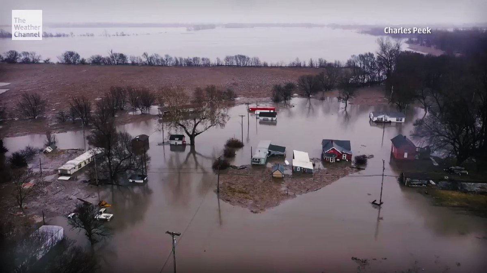

The Weather Channel
@weatherchannel
Peru, Nebraska has seen plenty of 100-year and 250-year floods, but this is unlike anything they've ever experienced before. Our coverage on the massive midwestern flood story continues throughout the day.

1:44
7.9K views
12:26 AM · Mar 21, 2019
133
100 people are Tweeting about this